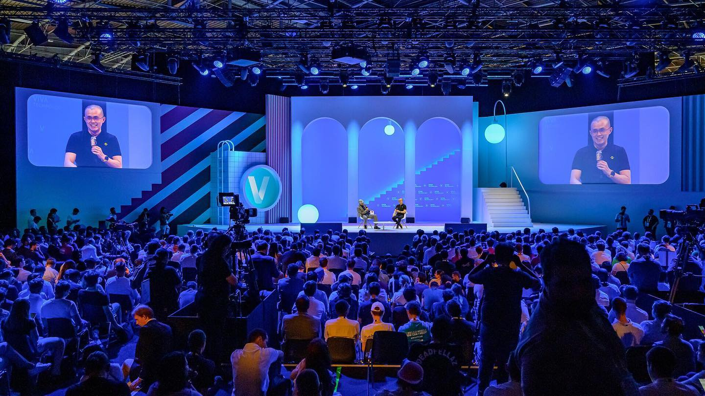

The Origins and Evolution of TechCon: A Journey Through Innovation
TechCon, now one of the most influential technology conferences in the world, has a rich history that dates back to its humble beginnings. Founded in 2005, TechCon has grown from a small gathering of tech enthusiasts to a global event attracting industry leaders, innovators, and professionals from diverse fields.
